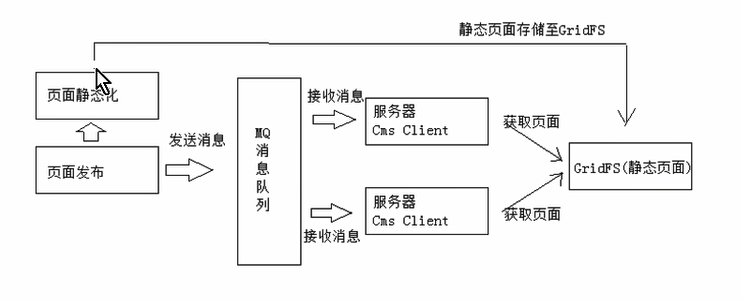
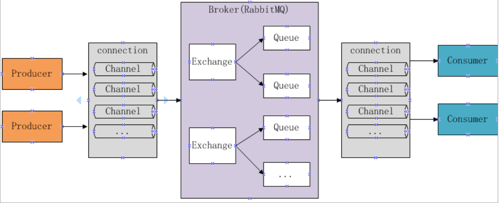

RabbitMQ原文出处:本文由博客园博主yh2two提供。
原文连接:https://www.cnblogs.com/yh2two/p/11739656.html
# RabbitMQ调用过程以及相关的配置参数有哪些？ #
调用过程：
生产者连接到RabbitMQ Broker ， 建立一个连接 ，开启一个信道，声明一个交换器，声明一个队列，通过路由键将交换器和队列绑定起来，发送消息至RabbitMQ Broker，其中包含路由键、交换器等信息，相应的交换器根据接收到的路由键查找相匹配的队列。
如果找到，则将从生产者发送过来的消息存入相应的队列中，如果没有找到，则根据生产者配置的属性选择丢弃还是回退给生产者关闭信道。 关闭连接。
消费者连接到RabbitMQ Broker ，建立一个连接 ，开启一个信道，消费者向RabbitMQ Broker 请求消费相应队列中的消息，等待RabbitMQ Broker 回应并投递相应队列中的消息， 消费者接收消息。消费者确认接收到的消息。RabbitMQ 从队列中删除相应己经被确认的消息， 关闭信道。关闭连接。
配置：
环境变量设置 如： 节点名称，rabbitmq配置文件地址， 节点内部通讯端口等
配置文件 如： 端口， ip， 网络，内存等
运行时参数和策略 在运行时设置
# 消息队列是如何进行消费的 #
JMS规范目前支持两种消息模型：点对点（point to point， queue）和发布/订阅（publish/subscribe，topic）在点对点模式中,消息生产者生产消息发送到queue中，然后消息消费者从queue中取出并且消费消息。消息被消费以后，queue中不再有存储，所以消息消费者不可能消费到已经被消费的消息。Queue支持存在多个消费者，但是对一个消息而言，只会有一个消费者可以消费。

MQ全称为Message Queue，即消息队列， RabbitMQ是由erlang语言开发，基于AMQP（Advanced Message
Queue 高级消息队列协议）协议实现的消息队列，它是一种应用程序之间的通信方法，消息队列在分布式系统开
发中应用非常广泛。
AMQP是一套公开的消息队列协议，最早在2003年被提出，它旨在从协议层定义消息通信数据的标准格式，
为的就是解决MQ市场上协议不统一的问题。RabbitMQ就是遵循AMQP标准协议开发的MQ服务。
JMS是java提供的一套消息服务API标准，其目的是为所有的java应用程序提供统一的消息通信的标准，类似java的
jdbc，只要遵循jms标准的应用程序之间都可以进行消息通信。它和AMQP有什么 不同，jms是java语言专属的消
息服务标准，它是在api层定义标准，并且只能用于java应用；而AMQP是在协议层定义的标准，是跨语言的 。
开发中消息队列通常有如下应用场景：
1、任务异步处理。
将不需要同步处理的并且耗时长的操作由消息队列通知消息接收方进行异步处理。提高了应用程序的响应时间。
2、应用程序解耦合
MQ相当于一个中介，生产方通过MQ与消费方交互，它将应用程序进行解耦合。
市场上还有哪些消息队列？
ActiveMQ，RabbitMQ，ZeroMQ，Kafka，MetaMQ，RocketMQ、Redis。
为什么使用RabbitMQ呢？
1、使得简单，功能强大。
2、基于AMQP协议。
3、社区活跃，文档完善。
4、高并发性能好，这主要得益于Erlang语言。
5、Spring Boot默认已集成RabbitMQ
RabbitMQ工作原理

组成部分说明如下：
Broker：消息队列服务进程，此进程包括两个部分：Exchange和Queue。
Exchange：消息队列交换机，按一定的规则将消息路由转发到某个队列，对消息进行过虑。
Queue：消息队列，存储消息的队列，消息到达队列并转发给指定的消费方。
Producer：消息生产者，即生产方客户端，生产方客户端将消息发送到MQ。
Consumer：消息消费者，即消费方客户端，接收MQ转发的消息。
消息发布接收流程：
-----发送消息-----
1、生产者和Broker建立TCP连接。
2、生产者和Broker建立通道。
3、生产者通过通道消息发送给Broker，由Exchange将消息进行转发。
4、Exchange将消息转发到指定的Queue（队列）
----接收消息-----
1、消费者和Broker建立TCP连接
2、消费者和Broker建立通道
3、消费者监听指定的Queue（队列）
4、当有消息到达Queue时Broker默认将消息推送给消费者。
5、消费者接收到消息。